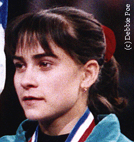

Oksana Chusovitina (USSR/UZB/GER)

1990 Goodwill Games V
Champion
1991 World FX Champion
2001 World V Silver Medalist
2003 World V Champion
|
Medal Total
|
Oksana was born on June 19, 1975 in Bukhara (Uzbek SSR). She began gymnastics in 1982. Oksana was the first female to perform a layout full-out on FX. In December 1997 she married Bakhodir Kurpanov, who competed in wrestling at the 1996 Olympics. They have a son, Alisher. In October 2006, Oksana was granted German citizenship and won a bronze medal for Germany at the World Championships (Aarhus, Denmark). To learn more about Oksana, visit Team Uzbek.
Competition Results
2000
Bosphorus Cup: 3rd V
Olympic Games: 45th AA (prelims)
2001
Cottbus International: 2nd V
DTB Cup: 1st FX, 2nd V, 4th B, 7th UB
Friendship Classic: 1st AA
Gander Memorial: 1st AA
Glasgow Grand Prix: 1st V, 1st UB, 3rd B, 4th FX
Goodwill Games: 4th AA
Hypotheek Shop International: 4th AA
Swiss Cup: 7th AA
UZB Cup: 1st AA
WOGA Classic: 2nd AA
World Championships: 19th AA, 2nd V
World Stars: 2nd V, 2nd UB, 2rd B, 3rd FX
2002
American Cup: 4th AA
Asian Games: 2nd AA
Gander Memorial: 2nd AA
Golden Lilia: 2nd AA
Swiss Cup: 5th AA
The Gala: 2nd AA
WOGA Classic: 1st AA
World Championships: 3rd V, 6th FX, 8th B
2003
Cottbus International: 1st V
DTB Cup: 2nd V, 6th B, 6th FX
French International: 5th V
Gander Memorial: 3rd AA
Glasgow Grand Prix: 2nd V, 5th UB, 5th B, 6th FX
Noynoy Grand Prix: 3rd V, 5th UB, 5th FX, 9th B
Swiss Cup: 2nd AA
WOGA Classic: 6th AA
World Championships: 1st V
2004
Cottbus International: 1st V, 6th FX
French International: 1st V, 4th UB, 4th B
Olympic Games: 97th AA (prelim)
Sigfried Fischer Trophy: 1st V, 3rd UB
2005
Cottbus International: 4th B, 5th V
DTB Cup: 7th V
Glasgow Grand Prix: 1st V, 6th B, 7th UB
Sigfried Fischer Trophy: 1st V
2006
Cottbus International: 2nd V
DTB Cup: 2nd V, 3rd UB
Gander Memorial: 3rd AA
Swiss Cup: 1st Team
World Championships: 16th Team, 9th AA, 3rd V
2007
Cottbus International: 1st V
European Championships: 6th AA, 2nd V, 6th FX
ROM-GER-SUI Meet: 2nd Team, 3rd AA
Swiss Cup: 2nd Team
World Stars: 1st V, 2nd FX, 4th B
2008
Cottbus International: 1st V, 3rd B
Gander Memorial: 2nd AA
Doha World Challenge Cup: 1st V, 6th FX
European Championships: 1st V, 6th FX
Olympic Games: 9th AA, 2nd V
2010
Cottbus International: 1st V
Trnava International: 15th AA, 1st V
ROM-GER-SUI Meet: 2nd Team
2011
Cottbus International: 1st V
European Championships: 2nd V
ROM-GER-SUI Meet: 2nd Team
World Championships: 6th Team, 2nd V
2012
Blume Memorial: 4th AA
Trnava International: 19th AA
Olympic Games: 5th V
2013
Anandia Challenge Cup: 2nd V
Cottbus International: 1st V
French International: 3rd V
Mexican Open: 3rd AA
Trnava International: 1st AA
World Championships: 5th V
2014
Asian Games: 5th Team, 2nd V
Blume Memorial: 5th AA
Mexican Open: 3rd AA
2015
Cottbus International: 1st V
Houston International: 2nd AA
Ljubljana World Challenge Cup: 1st V
Varna Challenge Cup: 1st V
2016
Baku Challenge Cup: 1st V
Mersin Challenge Cup: 1st V, 2nd B
Olympic Games: 7th V
Pre-Olympic Test Event: 44th AA, 2nd V
2017
Baku Challenge Cup: 1st V
Cottbus International: 1st V
Doha Challenge Cup: 1st V
Gymnix International: 10th AA
Voronin Cup: 14th AA, 1st V
World Championships: 5th V
2018
Cottbus International: 5th V
Gander Memorial: 7th AA
World Championships: 4th V
2019
Baku Challenge Cup: 2nd V
Melbourne World Cup: 2nd V, 8th B
© Gymn Forum